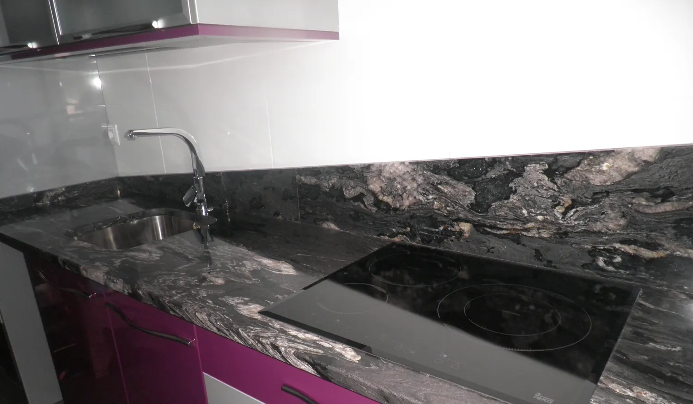
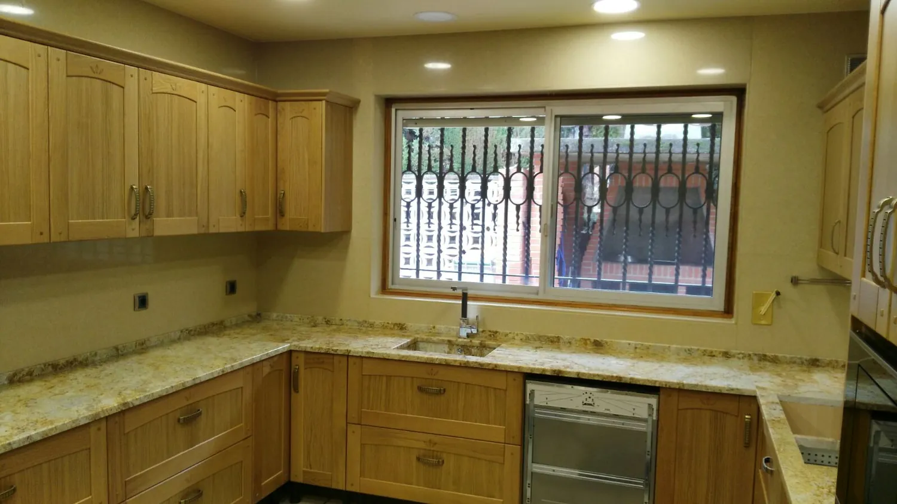
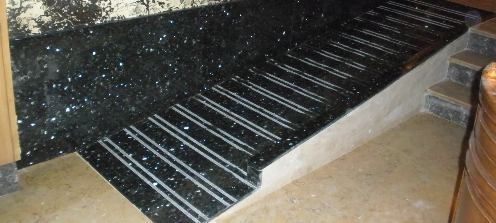
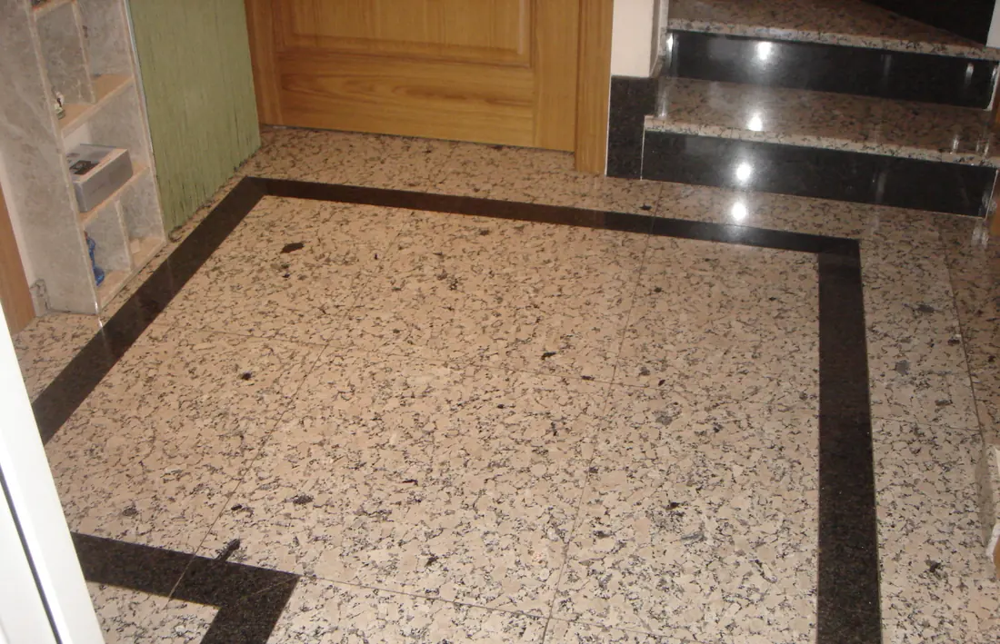
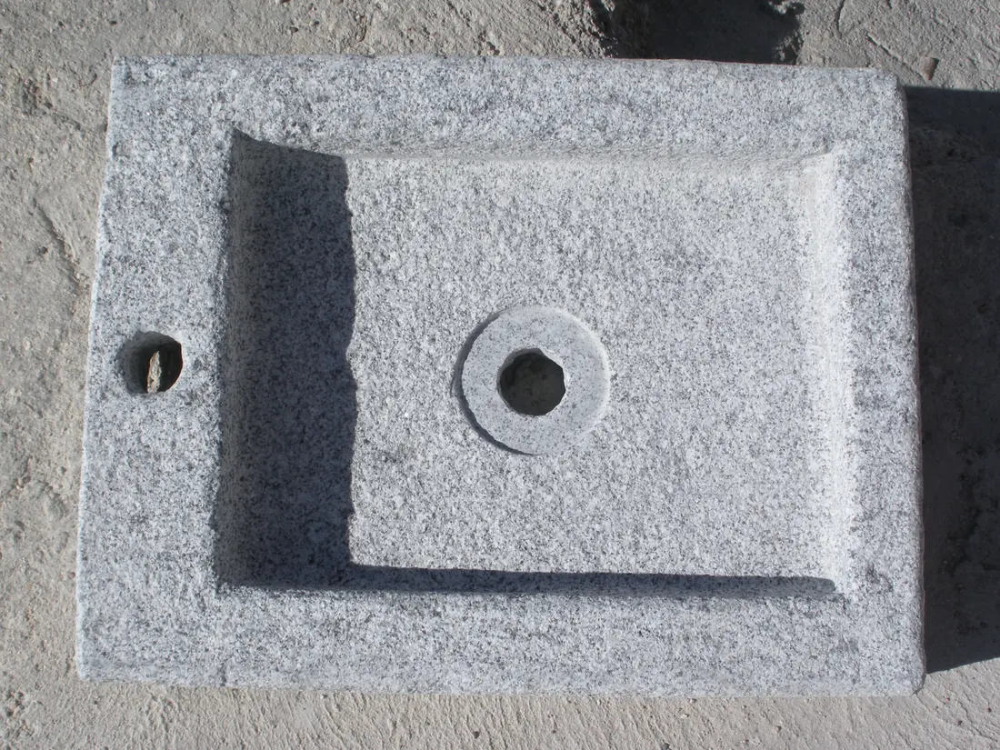
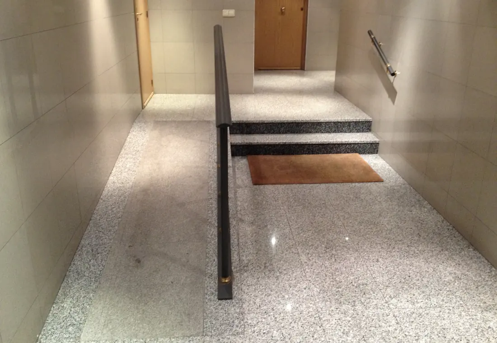
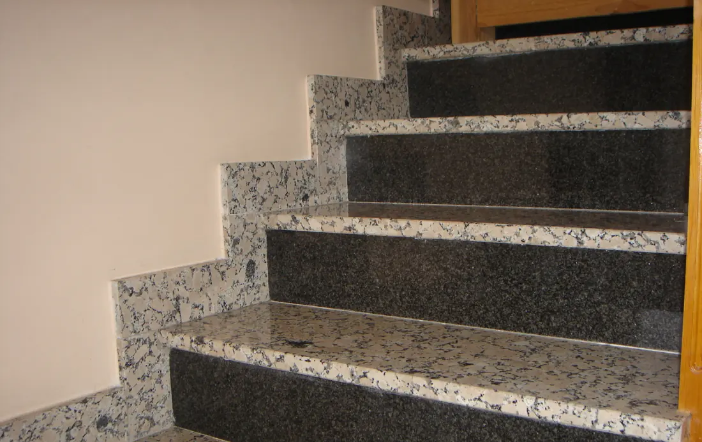
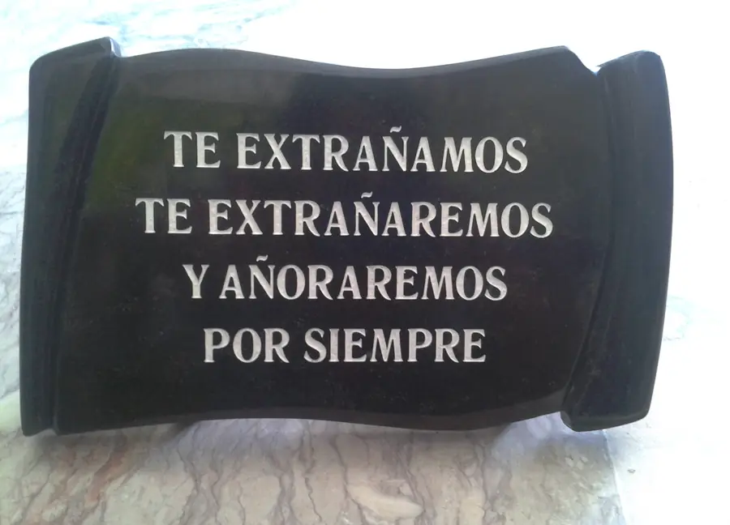
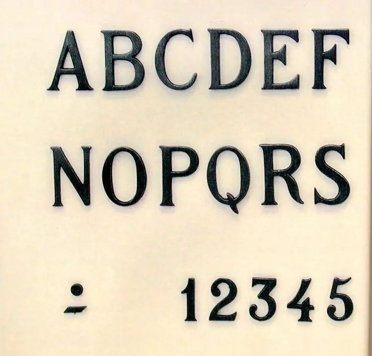

Piedra natural, trabajada en familia desde 1980
Encimeras de cocina y baño, escaleras, solados y trabajos de cementerio en mármol, granito y compacto. De nuestro taller a su casa.
Medida, cortada y colocada por el mismo equipo
Elaboramos encimeras de cocina y de baño en granito, mármol, Silestone, Compac, Neolith o Dekton. Cada pieza se revisa desde que entra en el taller hasta que sale, y le llega plastificada, con su precinto.



- IMedimos en su casa
- IIElaboramos en nuestro taller
- IIIPlastificamos para el transporte
- IVColocamos sin dejar polvo
Toda la casa, también en piedra
Escaleras, solados y chapados, por dentro y por fuera. Y piezas a medida: chimeneas, mesas o un fregadero tallado en un solo bloque de granito.
- EscalerasInteriores y exteriores
- Solados y chapadosPortales y entradas
- Chimeneas y mesasHechas a mano








Un recuerdo en piedra, con el cuidado que merece
Trabajamos cada caso de forma particular, y nos ocupamos de la colocación y el montaje en el cementerio. Le asesoramos, con presupuesto sin compromiso.
- Sepulturas
- Nichos
- Columbarios
- Libros y pergaminos
- Cristos y cruces
- Búcaros y pilas
- Letras y grabaciones
- Fotocerámica
- Marmolina
- Hornacinas
Para cuidarla: mármol, con jabón neutro y un paño húmedo, nunca con lejía. Granito pulido, con detergente de pH neutro. Lo ideal, de tres a cuatro veces al año.
Venga a ver la piedra antes de elegirla
Una familia de marmolistas. En Leganés desde 1980, junto al cementerio, y con taller de elaboración en Yuncos desde 2005.
romero@marmolescarrobles.com
Pol. Ind. Villa de Yuncos · 45210